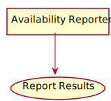
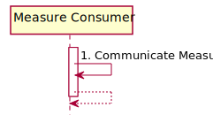

Situational Awareness for Novel Epidemic Response
0.1.0 - CI Build
Situational Awareness for Novel Epidemic Response
0.1.0 - CI Build
Situational Awareness for Novel Epidemic Response - Local Development build (v0.1.0). See the Directory of published versions
This section describes the REPORT-TX of this guide. This transaction is used by the Measure Consumer actors.
The Communicate Results transaction allows users (e.g., Public Health Officials) to view current resource availability, or other systems to access resource availability data.

Figure 2.3-1: Communicate Results Use Case Diagram
| Actor | Role |
|---|---|
| Measure Consumer | Display or transmits reports using availability data |
| Standard | Name |
|---|---|
| RFC-7230 | Hypertext Transfer Protocol - HTTP/1.1 |

Figure 2.3-2: Communicate Results Interactions
Upon completion of this transaction, resource availability data will have been communicated to a user or system. This can be demonstrated by generation of a report, summary, or other artifact, or by transmission of resource availability data or some computation over it to another system.
This requirement can be met by a Measure Consumer that consumes and displays data in a Web Browser, consumes data and transmits it in another format to a public health agency (e.g., using the CDC CSV format), or as a Measure Intermediary that consumes data from one system and communicates it to another, or transforms it and communicates it back to the original system or to another system.
IG © 2020+ HL7 International. Package hl7.fhir.us.saner#0.1.0 based on FHIR 4.0.1. Generated 2020-04-07
Links: Table of Contents |
QA Report
| Version History  |
|
 |
Propose a change
|
Propose a change